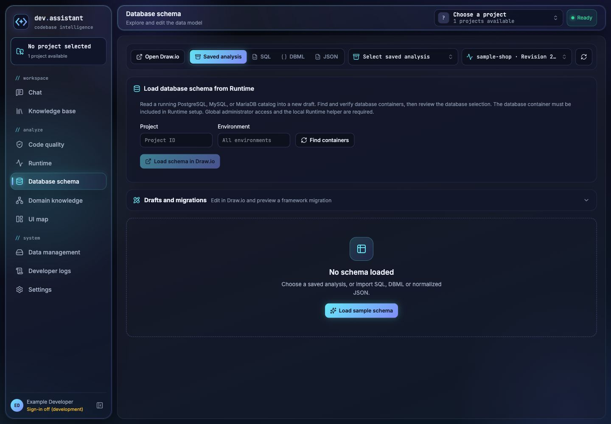
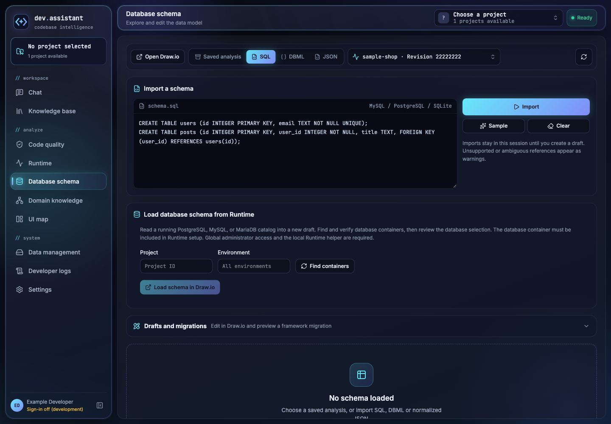
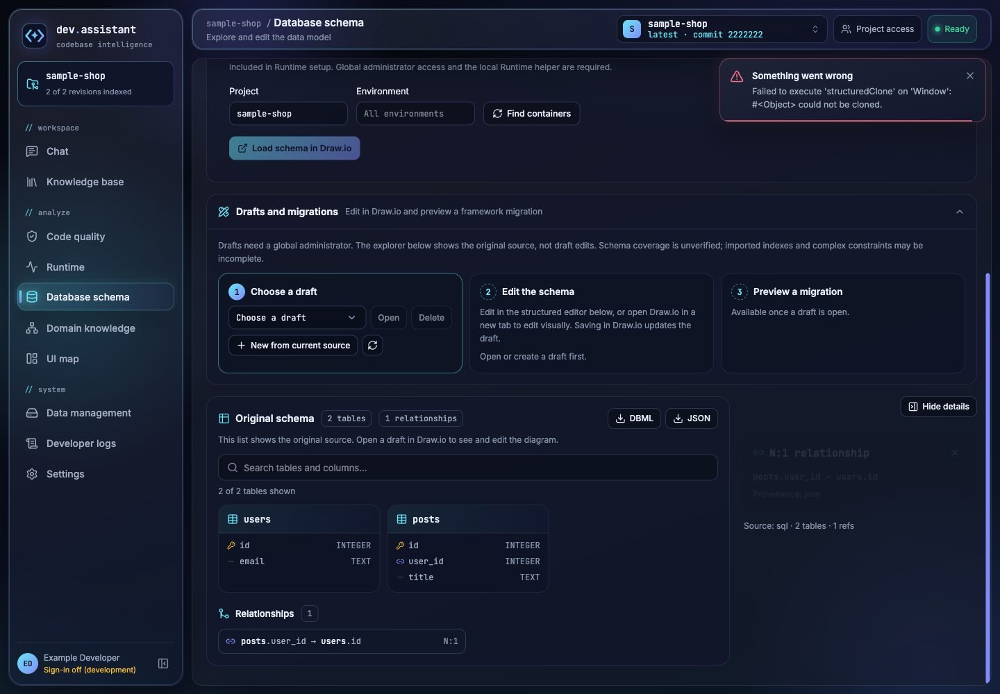
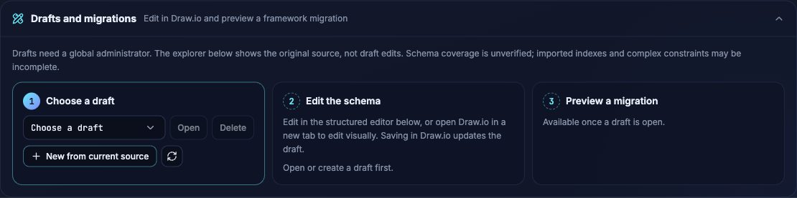
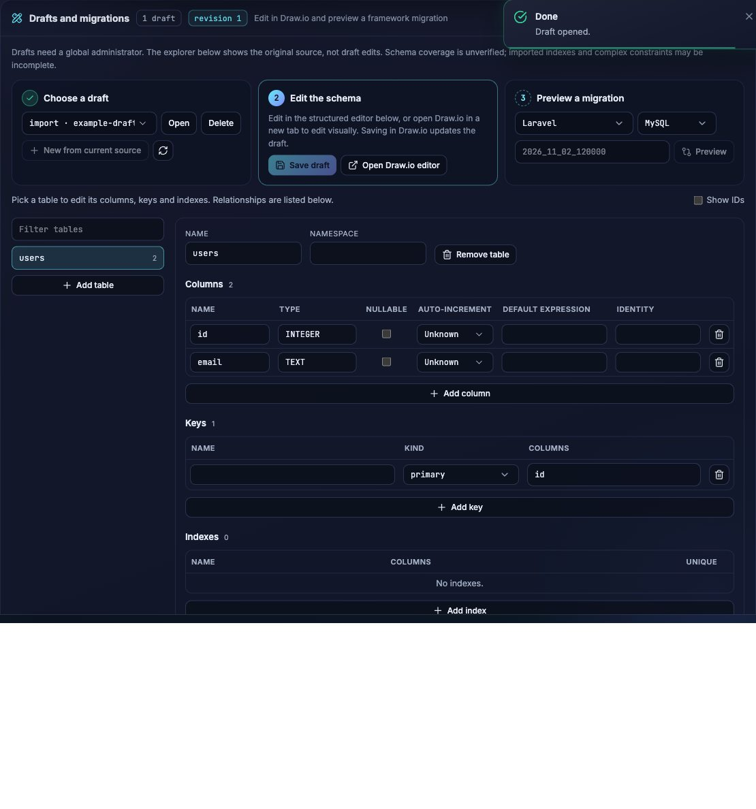
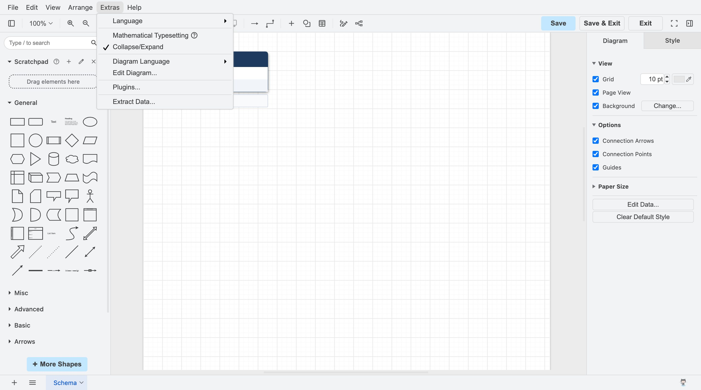
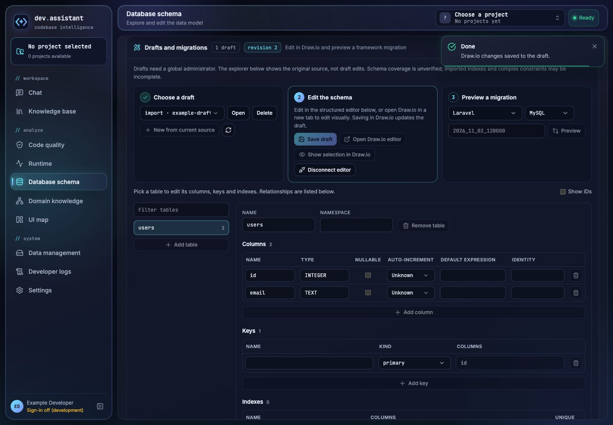
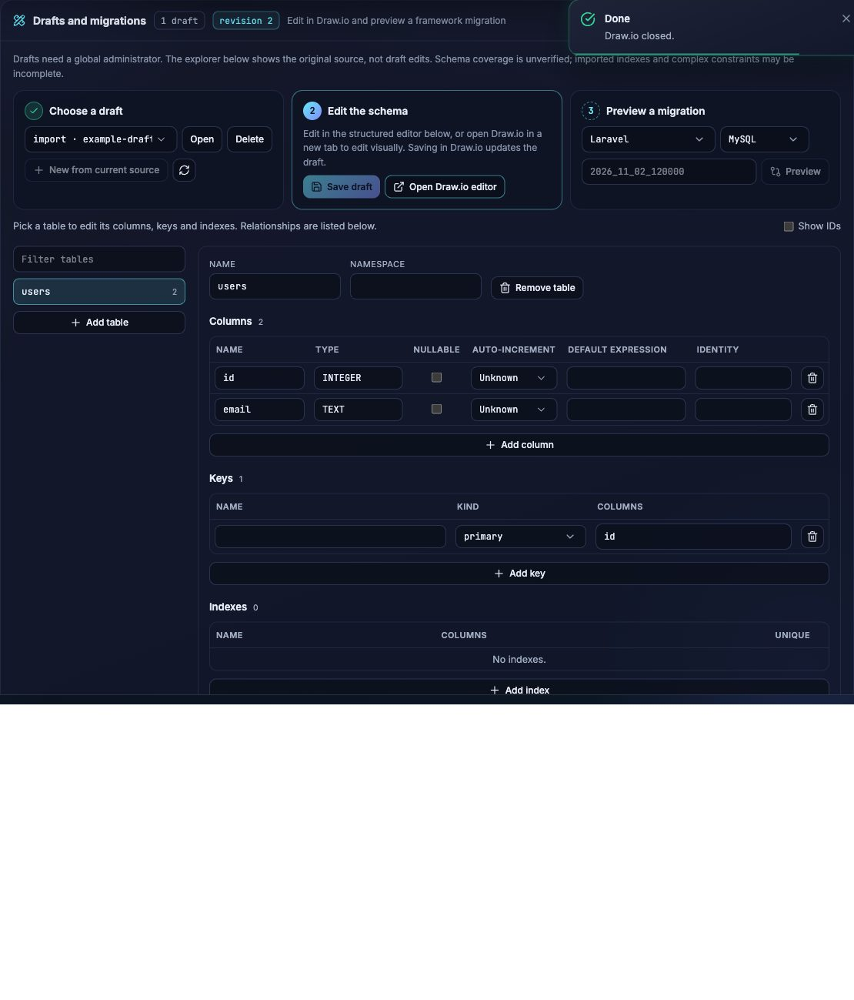
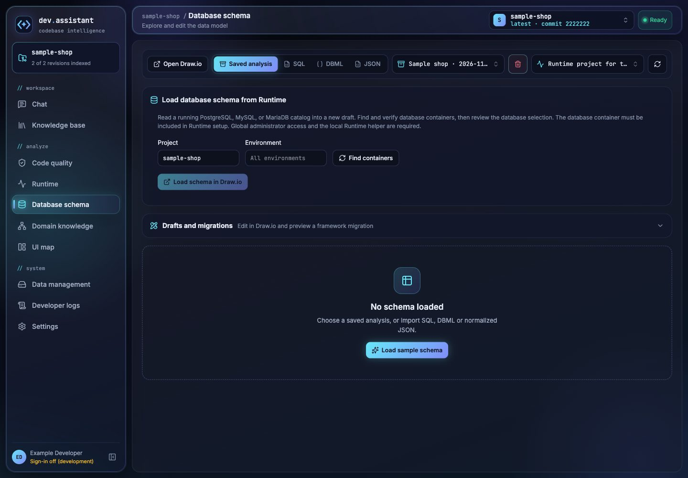

Load a schema
- Open Database Schema. To use an existing analysis, choose Saved analysis and select it from the list.

Database Schema source options and saved analysis picker. - To use your own schema, choose SQL, DBML, or JSON, paste the matching schema text, and click Import. Use normalized schema JSON, such as a file exported from this view. To try the workflow without your own data, choose Load sample schema.

Importing sample SQL in the app. - In Original schema, search by table or column name. Select a table or relationship to inspect its details. Check warnings if a relationship is missing.

Original schema and the posts-to-users relationship.
Imports are parsed in the browser. Use DBML or JSON in Original schema to download the source schema.
Edit in Draw.io and save back to the app
- After loading a schema, choose New from current source to create a draft, or open an existing draft.

Drafts and migrations: create a new draft from the current source. - If you edited the draft in the app, click Save draft first. Then click Open Draw.io editor. Allow popups if the editor does not open, and keep the Database Schema tab open.

The saved draft and Open Draw.io editor control. - Edit table and column labels directly in Draw.io. Use Extras to edit column properties, table keys, indexes, and relationships.

The schema diagram and Extras menu in Draw.io. - Click Save in Draw.io. Switch back to the app and wait for Draw.io changes saved to the draft. The app saves both the updated schema and the diagram layout.

The app confirms that Draw.io changes were saved to the draft. - Close the editor after the save finishes. Review the changes in the app’s structured draft editor. For example, after renaming a column in Draw.io, look for the new name in the draft. The Original schema still shows the source you started from.

The structured draft editor after returning from Draw.io.
Saving a draft does not change the database. To review what would change, choose a framework and database in Preview a migration, enter a migration timestamp, and select Preview. Review the before-and-after operations before downloading the migration.
If the app rejects a save, correct the diagram and try again. The last valid saved draft is preserved. If offered, use Download rejected diagram for recovery before leaving the page.
Delete a saved analysis
- Choose Saved analysis and select the analysis you no longer need.
Database Schema source options and saved analysis picker. - Choose the remove action and confirm the selected analysis in the dialog.

Review the selected analysis in the delete confirmation.
Runtime table usage
When matching runtime data is available, the selected table can show observed table operations and related symbols or routes. Choose the matching project and revision in the runtime scope selector, then compare usage with the static schema. Runtime observations are sampled and do not prove that every query or code path has been observed.
Common problems
- No saved analyses appear
- Confirm that an analysis was created and saved, then refresh. The view loads at most the first 100 analysis records.
- No schema is loaded
- Check the selected source, wait for loading to finish, and read the warnings. For an imported schema, confirm the text matches the selected format.
- A table or edge is missing
- Search may be hiding the table, or the parser may have rejected an unsupported definition. Clear the search and inspect warnings.
- SQL import produces warnings
- Reduce the input to supported table, key, index, and foreign-key definitions, then import again. Keep the original SQL unchanged outside the viewer.
Release source
This guide follows the release schema UI documented in the UI overview and implemented by DatabaseSchemaView.